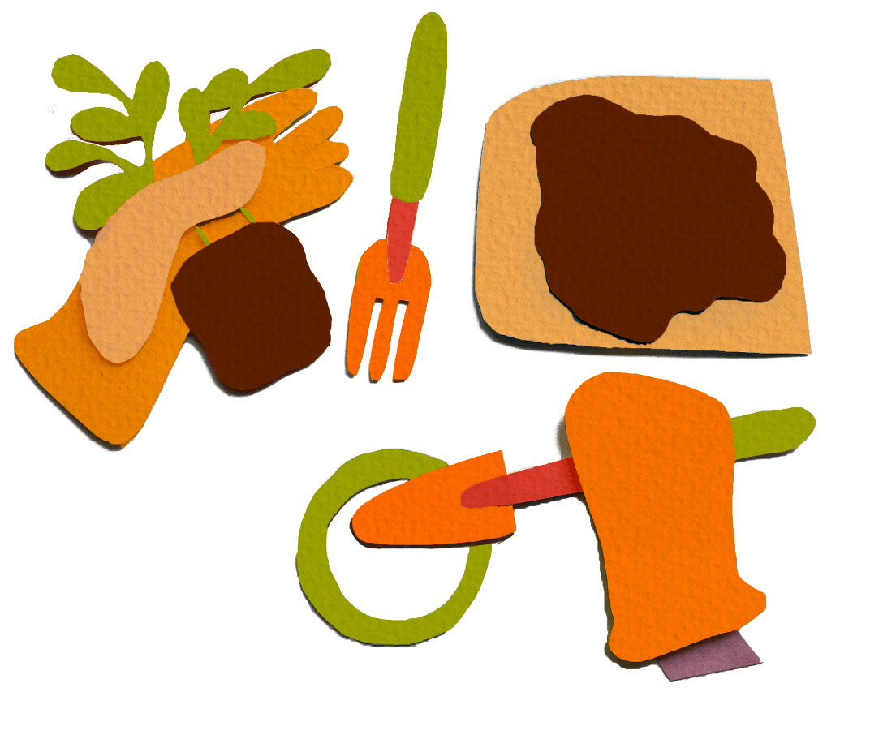
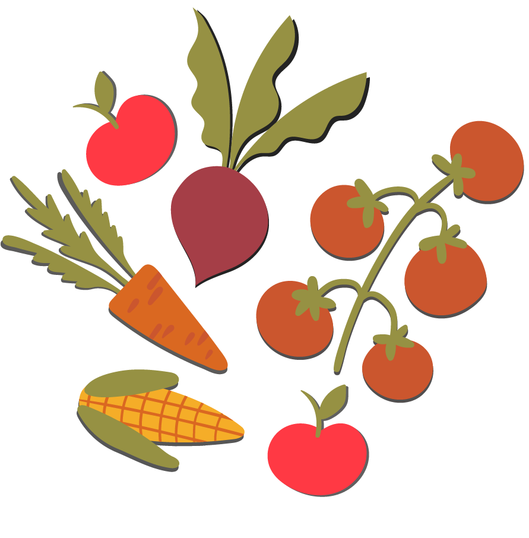
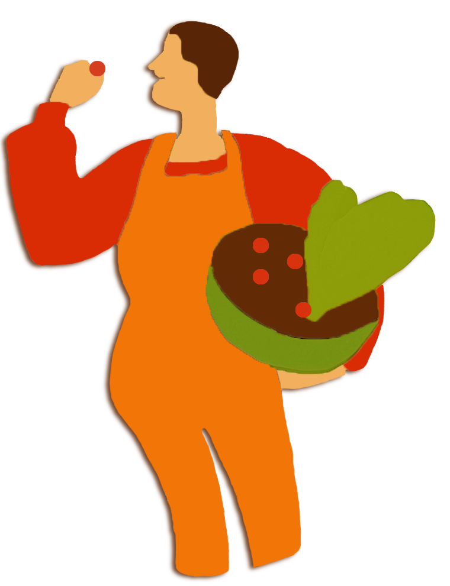
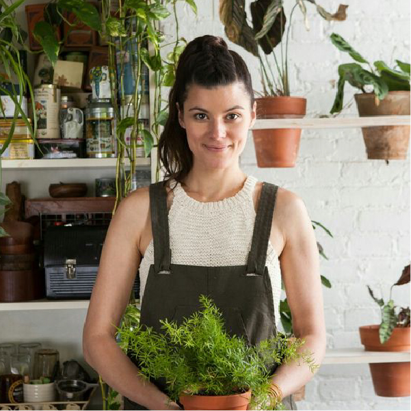
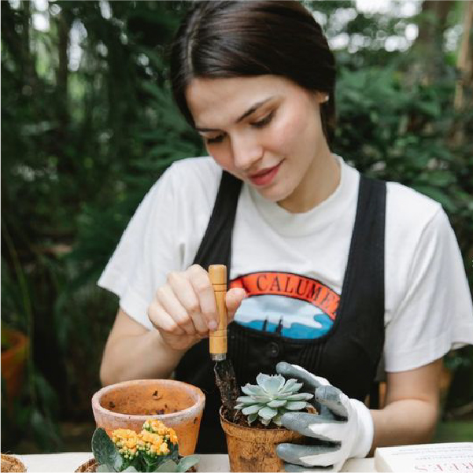
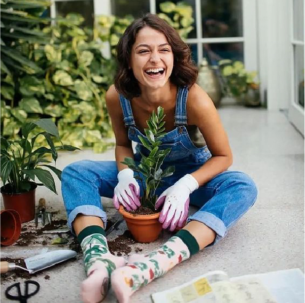

Taller
Tu Verde
Este curso presencial de jardinería urbana busca capacitar a los participantes en el cuidado de plantas en entornos urbanos, promoviendo un estilo de vida sostenible y saludable.


Jardinería urbana:
Cosechando éxito
Explorá el fascinante universo de la jardinería urbana en nuestro curso presencial. Desde la esencia de la botánica hasta las técnicas más innovadoras de cultivo en espacios limitados para cultivar de manera efectiva en entornos urbanos.
¡Unite a nosotros y convertí tu ciudad en un oasis verde!
Módulos del curso

Sembrando raíces: Un viaje integral en jardinería urbana
Completar un curso de jardinería urbana no solo proporciona conocimientos prácticos sobre el cuidado de las plantas en entornos urbanos, sino que también promueve un estilo de vida más saludable y sostenible, además de mejorar la calidad estética y ambiental de las áreas urbanas.
- Certificado
Una vez finalizado el Proyecto Final y la evaluación recibirás un certificado que avala tus conocimientos y habilidades en jardinería urbana. - Comunidad
Nuestro curso también te abrirá las puertas a una comunidad amplia de estudiantes,donde podrás compartir experiencias y consejos, para seguir creciendo por fuera del curso. - Guías y tutoriales
Además, obtendrás acceso exclusivo a recursos adicionales, como guías y tutoriales avanzados, y tendrás la oportunidad de asistir a eventos y talleres especiales organizados por expertos en jardinería y sostenibilidad.
Nuestros Profes
Matías Martín
Chief Experto en botánica
Julieta Pozzollo
Especialista en jardines verticales
Andrea Laurini
Fundadora de Flurbana